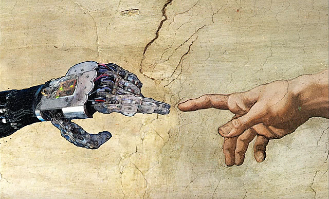
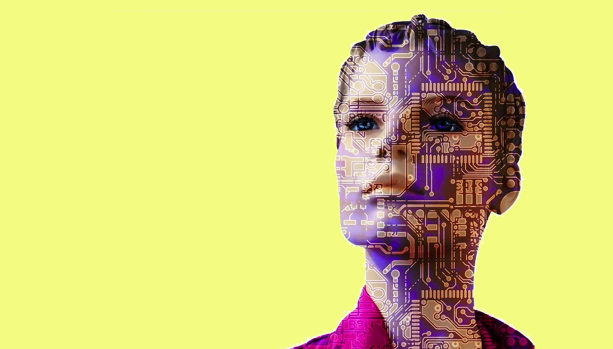

En su Manifiesto Cyborg, Donna Haraway utiliza el recurso retórico de la ironía para construir un mito político protagonizado por los cyborgs. Esta narrativa cuestiona y transgrede los límites de tres dualismos clave en la estructura y epistemología de la sociedad occidental: humano-animal, organismo-máquina y físico-no físico. Haraway propone que los avances tecnológicos y teóricos en la biología han contribuido a reducir la brecha entre lo humano y lo animal, y que en este límite difuso surge el cyborg. Su figura surge también en la ambigüedad tecnológica provocada por las máquinas cibernéticas de fines del siglo XX, que al adquirir mayor autonomía tornaron difusa la separación organismo-máquina. Estas nuevas tecnologías, que avanzan de lo minúsculo a lo etéreo, arrebatan la ubicuidad a las concepciones divinas y así quiebran la barrera de lo físico y lo no físico (pp. 10-13).

- 
- 
A CYBORG
MANIFESTO (1985)
Donna Haraway
El cyborg es esquivo a la bipolitica foucaultiana. Según la autora, los esfuerzos políticos y teóricos deben intentar superponer dos puntos de vista que parecieran ser dicotómicos: el mundo cyborg concebido como la imposición final de un sistema de control masculinista, o bien como un mundo en el cual las realidades sociales y corporales no temen soltar las categorías totalizantes y cambiarlas por identidades parciales y contradictorias.
“No existe nada en el hecho de ser ‘mujer’ que una de manera natural a las mujeres”
Donna Haraway apunta que las identidades políticas se han construido como categorías totalizantes que derivan de los sistemas de opresión. En esta línea, realiza una lectura de la crítica contenida en los conceptos de conciencia oposicional e identificación taxonómica, que permiten proyectar un camino en el cual la unidad política y poética no dependa de la simple apropiación e incorporación de identidades. El ensayo valora la crisis epistemológica como una oportunidad para plantear nuevas unidades, y expone los problemas asociados a los reduccionismos radicales que surgen al perfilar a les sujetes polítiques del feminismo socialista desde una analogía con el marxismo (mujer=clase obrera). Señala que tanto el marxismo como el feminismo radical han intentado anexar otras formas de dominación mediante adiciones, analogías y listados (p. 26).
“Scary new networks [of domination]”
Las relaciones sociales han cambiado a nivel global de la mano de la ciencia y la tecnología. Donna Haraway postula que las viejas dominaciones basadas en jerarquías mutaron a redes más complejas. La informática de la dominación se configura desde lo irracional que resultan las antiguas opresiones al momento de construir identidades políticas a partir de ellas. Todos los componentes de este nuevo paradigma de dominaciones están interrelacionados dentro de este sistema (p. 30).“El trabajo está siendo redefinido al mismo tiempo como femenino y feminizado”
La ‘Nueva Revolución Industrial’ ha reformulado a la clase trabajadora y desestabilizado la agrupación en familias en pos de nuevas colectividades. Así, el trabajo mismo está siendo reestructurado y feminizado. Con esto, Haraway argumenta que la fábrica, el hogar y el mercado están integrados en una nueva escala. La economía del trabajo doméstico se ha convertido, con ayuda de las nuevas tecnologías, en una estructura organizacional capitalista de alcance global (pp. 37-39). Las tendencias culturales hacen colapsar el estado de bienestar, vuelven urgente la feminización de la pobreza, erosionan el concepto de género y acentúan la feminización del trabajo. Las tecnologías de comunicación erradican la ‘vida pública’ y reconceptualizan la ‘vida privada’. Nuevos grupos conforman la fuerza de trabajo asociada a la ciencia y la tecnología. Lo anterior es para Donna Haraway algo que puede decantar en políticas que aborden esta nueva clase media profesional en la cual las mujeres y mujeres de color serán mayoría (pp. 42-45).“No hay espacio para las mujeres en estas redes [de poder y vida social]”
Utilizando una lista de sitios sociales idealizados, Haraway traza una visión del disperso ‘lugar’ de las identidades cyborg en el circuito integrado de la informática de la dominación. Según ella, se trata de geometrías de diferencia y contradicción (p.46).Acusando la incapacidad de los esfuerzos teóricos por clasificar experiencias tan complejizadas, la autora califica el sueño del lenguaje común como uno que resulta totalizante e imperialista. Señala que “no necesitamos una totalidad para trabajar bien” (p. 52).
“Despojada de la identidad, la raza bastarda enseña sobre el poder de los márgenes”
En un último capítulo, Donna Haraway incorpora ejemplos del imaginario narrativo del cyborg, examinando cómo las obras de diverses narradores subvierten los mitos centrales del origen de la cultura occidental, replanteando las historias originarias. La principal herramienta de esta colonización narrativa es la escritura: “La escritura cyborg es sobre el poder de sobrevivir, no en la base de una inocencia original, sino en la base de apropiación de las herramientas para marcar el mundo que les marcó como ‘otro’” (p. 55).Reescribir los textos de los cuerpos y sociedades sin el mito fundacional de la unidad original, sin los recursos ideológicos de la victimización, sin la necesidad de enraizar la política en la identificación y la pureza y comprendiendo que no existe una separación ontológica entre organismo y máquina, abre nuevos caminos en una ciencia ficción que cuestiona las epistemologías basadas en la totalización. Las obras revisadas por la autora redefinen los placeres y las políticas del cuerpo. La figura del cyborg se perfila como una figura monstruosa, y “los monstruos siempre han definido los límites de la comunidad en el imaginario occidental” (p.64). La autora concluye que el género podría no ser una identidad global que sustente el feminismo actual y futuro, incluso contando con su profundidad y data histórica (p. 66). Apunta que los cyborgs están más relacionados con la regeneración que con la reproducción, y que gozan de una experiencia íntima con la construcción y deconstrucción de límites. Cierra con dos argumentaciones clave:
Así, el Manifiesto Cyborg se perfila como una revisión del pasado y una propuesta especulativa que llama a configurar nuevos espacios políticos para el futuro en íntima relación con las tecnologías. Es una oportunidad de reimaginación de los feminismos sin recurrir a los dualismos jerárquicos que totalizan las identidades, haciendo frente a un sistema de redes de dominación en el cual las tecnologías no son pasivas sino protagonistas mediante la erosión de su brecha ontológica con los organismos.